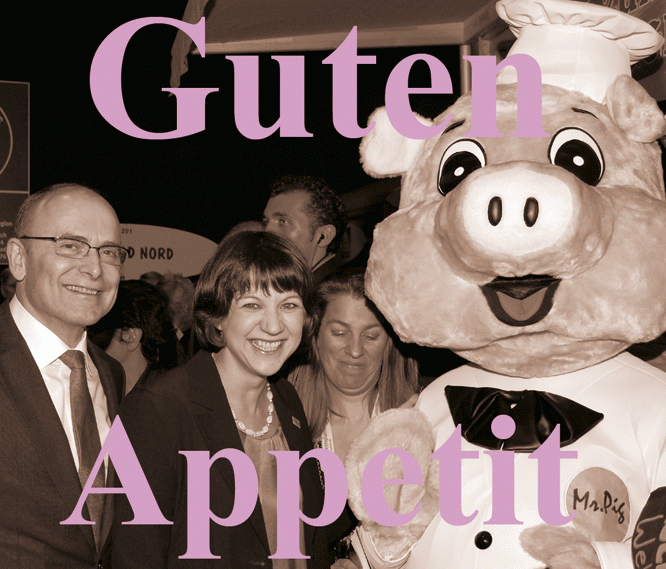

Wenn Menschen die BBCode-Anleitung zur Erstellung von Beiträgen in diesem Forum anschauen, sehen sie, dass es möglich wäre, einen Link zu einer anderen Websit zu setzen, der auch als Link funktioniert.
http://www.mensch-und-land.de/forum/faq.php?mode=bbcode#f4r0!
Dort kann man folgendes lesen:
phpBB hat zusätzlich eine Funktion, um Links automatisch zu erkennen. Diese Funktion wandelt jede syntaktisch korrekte URL in einen Link um, ohne dass Sie einen Tag oder sogar das führende http:// angeben müssen.
Wenn Sie zum Beispiel in Ihrem Text <!-- m --><a class="postlink" href="http://www.phpbb.de">http://www.phpbb.de</a><!-- m --> schreiben, so wird dies automatisch zu <!-- m --><a class="postlink" href="http://www.phpbb.de">http://www.phpbb.de</a><!-- m -->, sobald Sie die Nachricht betrachten.
Aber auf Nachfrage beim Landwirtschaftsministerium erfährt man, dass das nicht erwünscht sei.
Was ist das für ein neues Forum, dass sich nach den altbekannten Wünschen der minsteriellen Administration richten muss.
Warum könnten die administeriellen Wünsche nicht auch die Massentierhaltung in die Schranken weisen?
[Anhang: <!-- ia0 -->thumb-gutenappetit.gif<!-- ia0 -->]
Die drei Spams, die seit dem 21.12.2012 hier im Forum an vorderer Stelle die Aktivitäten der Einwohner ersetzen, werden sich dagegen wohl noch bis ins neue Jahr halten können.
Doch dann, wenn sich zur nächsten Grünen Woche dieser Masterplan zu seinem Ganzen fügen soll,
wird draußen vor der Tür verkündet werden : „Wir haben es satt!“.
